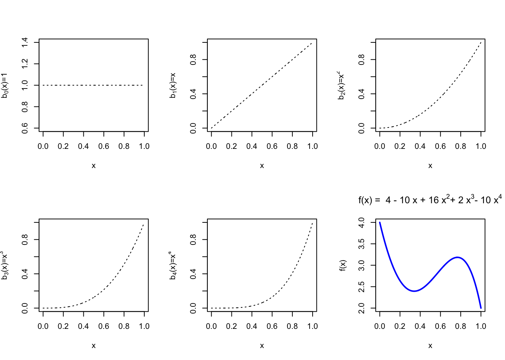
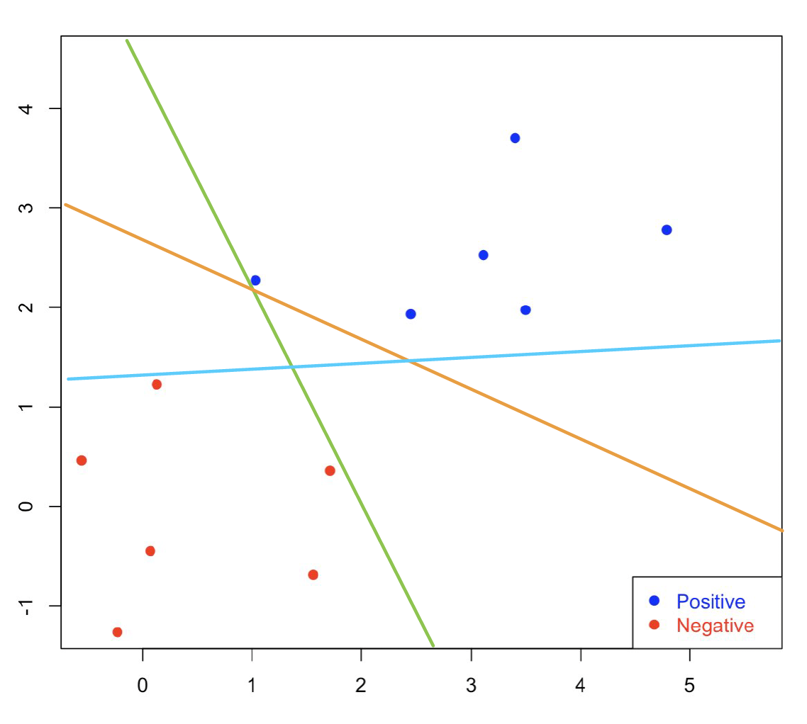
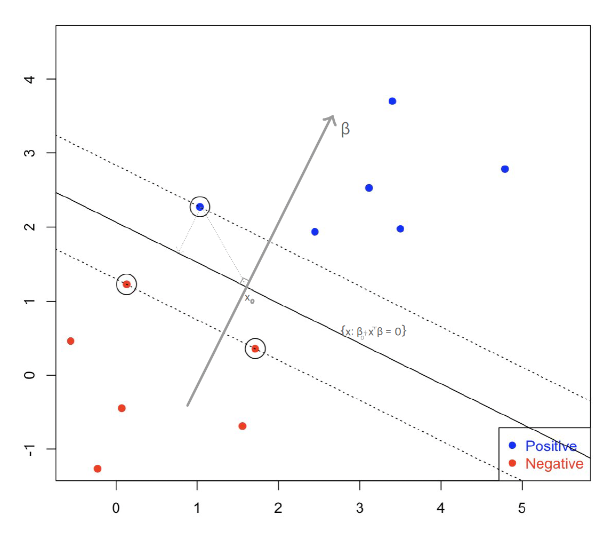

8.1 Linear SVM in Separable Case: Separation Margin
We start our discussion by presenting the original SVM originally proposed in 1963. Assume that we observe training data \(\mathcal{D}_n = \{x_i, y_i\}_{i=1}^{n}\), where \(x_i \in \mathbf{R}^p\) are the features and \(y_i \in\{-1,1\}\) is the response coded as -1/+1.
The goal is to estimate a function \(f(x) \in \mathbb{R}\) that separates the data, or specifically find a classification rule \(C(x) = sign \bigl\{f(x) \bigr\}\) that outputs the labels. In this context, the optimal classifier is
\[C^*(x) = sign \Bigl\{ P(Y=1|X=x) - P(Y=-1 |X=x) \Bigr\}\]
In contrast to logistic regression or DA, in Support Vector Machines instead of modeling conditional or joint distributions we directly model the decision boundary.
8.1.1 Maximum-Margin Classifier
If we assume that we have two classes \(y_i \in\{-1,1\}\), then the classification rule based on \(f(x)\) should be \[\begin{align*} &\hat{y} = +1,\, \text{ if }\, f(x)>0\\ &\hat{y} = -1,\, \text{ if }\, f(x)<0\\ \end{align*}\]
The classification is correct if \(y_i f(x_i)>0\). The \(y_i f(x_i)\) is a functional margin: if its value is positive, then it means we are on the correct side, while if its value is negative, then we are at the wrong side.

In the case of linearly separable classes, we need to find a linear function \(f(x) = x^T \beta + \beta_0\) to separate the two groups of points. But, there are several different options:

Figure 8.1: Separating Lines: which one is the best?

Figure 8.2: SVM: Maximum Separation Line
Mathematical Formulation
In Linear SVMs, we define a linear function representing the linear decision boundary as \[f(x) = \beta_0 + x^T \beta\]
When \(f(x)=0\), the (linear) separating hyperplane is given by \[L= \Bigl\{x: \beta_0 + x^T \beta = 0 \Bigr\}\] Thus, for the separable case, all observations with \(y_i = +1\) are on one side \(f(x)>0\), and observations with \(y_i = -1\) are on the other side.
The Signed Distance of \(x\) to the hyperplane is defined as \[ \left \langle \frac{\beta}{||\beta||}, \, x-x_0 \right \rangle\]
Remark: When we define any type of distance, we typically use the “un-signed” version by considering the absolute value, i.e., \(|x-x_0|\) ir the square etc. which is always a non-negative quanityt. However, in the SVMs context, we choose to keep the sign, since this will encode on which side of the hyperplane the point lies. So, when the signed distance is positive, then this means that the point is on the side of the hyperplane toward which \(x\) points; when the signed distance is negative, then this means that the point is on the side of the hyperplane toward which \(x\) points
To find the signed distance of any point \(x\) to the hyperplane, we need to identify a point \(x_0\in L\) on the hyperplane, such that \[f(x_0)=0\,\, \Leftrightarrow \,\, x_0^T \beta = -\beta_0\]
Then ,if we take the difference \(x - x_0\), and project this vector to the direction of \(\beta\), then the distance of \(x\) to the hyperplane is the projection of \(x-x_0\) onto the unit vector (perpendicular) to \(L\), i.e., \(\frac{\beta}{||\beta||}\):
\[\begin{align*} \left \langle \frac{\beta}{||\beta||}, \, x-x_0 \right \rangle &= (x-x_0)^T \frac{\beta }{||\beta||}\\ &= \frac{1}{||\beta||} (x^T \beta + \beta_0) = \frac{1}{||\beta||} f(x) \end{align*}\] where \(\langle \cdot, \cdot \rangle\) denotes the inner product. From these equations, we can also deduce that \(f(x)\) is proportional to the signed distance from \(x\) to \(L\).
The goal of SVMs is to separate the two classes and maximize the distance to the closest points from either class (Vapnik 1996) and construct the Maximum Margin:
\[ \max_{\beta, \beta_0, ||\beta||=1} M\] \[\text{subject to }\,\, y_i \bigl(x_i^T \beta + \beta_0 \bigr) \geq M,\,\,i=1, \ldots ,n\]
In this way, all the points are at least a signed distance \(M\) from the decision boundary. Recall that \(f(x_i) = (x_i^T \beta + \beta_0)/||\beta||\) is the signed distance which means that if \(y_i=+1\), we require \(f(x_i) \geq M\), while if \(y_i=-1\), we require \(f(x_i) \leq -M\), and maximizing the minimum distance is equivalent to maximizing the separation margin.
One important note here is that the problem requires that the constraint is \(||\beta||=1\). At the same time, the scale of \(\beta\) plays a crucial role in calculating the margin. To avoid these issues, we choose to work with the “normed version” of the constraint: \[\frac{1}{||\beta||} y_i (x_i^T \beta + \beta_0) >M\]
In the normed version of the constraint, the scale of \(\beta\) does not play a role, therefore we can arbitrarily set \(||\beta||=1/M\) and re-write the original problem as\[\min_{\beta, \beta_0} \frac{1}{2}\;||\beta||^2 \] \[\text{subject to }\,\, y_i (x_i^T \beta + \beta_0) \geq 1, \,\,i=1, \ldots ,n\]
Based on the previous discussion, and the definition of the signed distance, this constraint practically requires that all points are at least \(1/||\beta||\) away from the separating plane. It also ensures that the points are on the correct side of the dotted lines, i.e. \[\begin{align*} & x_i^T \beta + \beta_0 \geq 1, \,\, \text{ for } y_i = +1\\ & x_i^T \beta + \beta_0 \leq 1, \,\, \text{ for } y_i = -1 \end{align*}\]
If \(x_i\) is on one of the dotted lines, i.e. $ y_i (x_i^T + _0 ) - 1 =0$, we consider the \(i\)-th constraint (or \(i\)-th point) as active. If \(y_i (x_i^T \beta + \beta_0 ) - 1 >0\), it is inactive. There should be at least two points, one from each class, that are active; otherwise we cannot improve the margin.
All this discussion now leads us to the primal form of the SVM optimization problem:
Primal Form
\[\text{minimize }\, \frac{1}{2} ||\beta||^2\] \[\text{subject to }\, y_i (x_i^T \beta+\beta_0) \geq 1, i=1, \ldots, n\]
The max-margin problem is a convex optimization problem with a quadratic objective function and linear or affine constraints, making it free from issues related to local optima. This is only possible for perfectly separable case.
8.1.2 The KKT Conditions: From the Primal to the Dual
The Karush-Kuhn-Tucker (KKT) conditions are a set of necessary conditions that characterize the solutions to constrained optimization problems. In most cases, when we want to maximize/minimize a function \(f(x)\) we focus on its derivative(s). Specifically, we look at the negative derivative at a particular point, \(-\frac{\partial f(x)}{\partial x}\), which indicates a direction along which we can make further reductions in the value of \(f\).
If there are no constraints, then the at the minimum, the derivative of \(f\) evaluated at that point should be zero, i.e. \(\frac{\partial f(x)}{\partial x}=0\). This condition signifies that there is no direction left to further reduce the value of \(f\), making it a necessary condition for optimality.
Investigating the Equality Constrained Optimization Problem
Let’s extend to the case where we have an equality constraint: \[\begin{align*} & \text{ minimize }_{x} f(x)\\ & \text{ subject to } h(x) = 0 \end{align*}\]
Here \(f(x)\) is objective function, and \(h(x)\) are the equality constraints defining the feasible region/set \(\mathcal{S} = \{x: h(x) = 0\}\). Then, at such a point the negative derivative of \(f\), which indicates a direction along which we can further reduce the value of \(f\), may not necessarily be zero. However, this non-zero direction must be a “forbidden” one in the sense that moving along it would lead us outside the feasible region, violating the equality constraint. Mathematically, we can express this situation as: \[\frac{\partial f(x)}{\partial x} + \lambda \frac{\partial h}{\partial x} = 0, \,\, \lambda\in \mathbb{R}\]
In a more general framework, we define the Lagrangian \[\mathcal{L} = f(x) + \alpha \; h(x)\] where \(\alpha\) is the so-called the Lagrange multiplier. Intuitively, for every \(x\) such that \(h(x)=0\), \(\nabla h(x)\) is orthogonal to the surface defined by the feasible set. If \(x^*\) is a local minimum, then \(\nabla f(x)\) is orthogonal to the surface at \(x^*\) – otherwise we would move along that surface and reach a smaller value. This leads to the conclusion that the gradients \(\nabla h(x)\) and \(\nabla f(x)\) have to be parallel at \(x^*\): \[\nabla f(x^*) = -\alpha\, \nabla h(x^*)\]
Inequality Constrained Optimization Problem
Consider a inequality constrained optimization problem: \[\text{minimize }_{x} \, g(x)\] \[\text{subject to } h_i(x) \leq 0, \text{ for all } i=1, \ldots, n\]
Define a generalized version of the Lagrangian as \[\mathcal{L}(x, \alpha) = f(x) + \sum_{i=1}^{n} \alpha_i h_i(\theta)\] \(\mathcal{L}\) now has two arguments: \(x\) and \(\alpha\).
If we think about it, there two ways we can maximize the Lagrangian:
First, we can maximize first with respect to \(\alpha_i\)s (for fixed \(x\)), i.e., \[\max_{\alpha \geq 0} \mathcal{L}(\theta, x)\] In this case, if \(x\) violates any of the constraints, i.e., \(h_i(x)>0\) for some \(i\), we can choose an extremely large \(\alpha_i\) so that \(\mathcal{L}\) is \(\infty\). The solution of this primal form must satisfy the constraint: \[\min_{x} \,\max_{\alpha\geq 0} \mathcal{L}(x, \alpha)\]
On the other hand, we can we minimize with respect to \(x\) first, and then maximize for \(\alpha\). This leads us to the dual problem: \[\max_{\alpha\geq 0} \, \min_{x} \mathcal{L}(x, \alpha)\]
The two problems are generally not the same. In fact, \[\underbrace{\max_{\alpha\geq 0}\, \min_{x} \mathcal{L}(x, \alpha)}_{dual} \leq \underbrace{\min_{x} \, \max_{\alpha\geq 0} \mathcal{L}(x, \alpha)}_{primal}\]
However, they are the same if both \(g\) and \(h_i\)s are convex,and the constraints \(h_i\)s are feasible (sufficient condition).
This leads us to the following approach into solving the SVM problem: Start with the original primal problem and re-write it as \[\min_{\beta, \beta_0} \frac{1}{2} ||\beta||^2\] \[\text{subject to }\,\, -\left\{y_i (x_i \beta^T + \beta_0) -1\right \} \leq 0, i=1, \ldots, n\]
The Lagrangian for this optimization problem is given by \[\mathcal{L}(\beta, \beta_0, \alpha) = \frac{1}{2} ||\beta||^2 - \sum_{i=1}^{n} \alpha_i \left \{y_i (x_i^T \beta + \beta_0) - 1 \right\} \]
We are going to solve the dual, so we will first minimize $(, _0, ) $ with respect to \(\beta\) and \(\beta_0\), then we will maximize over \(\alpha\).
Solving the Dual Problem
To compute the Find the optimizer with respect to \(\beta\) and \(\beta_0\):, we take derivatives with respect to \(\beta\) and \(\beta_0\): \[\begin{align*} \beta - \sum_{i=1}^{n} \alpha_i y_i x_i^T &= 0 \qquad (\nabla_{\beta} \mathcal{L} = 0)\\ \sum_{i=1}^{n} \alpha_i y_i &= 0 \qquad (\nabla_{\beta_0} \mathcal{L} = 0) \end{align*}\] and we plug these solutions back into the Lagrangian to obtain: \[\mathcal{L}(\beta, \beta_0, \alpha) = \sum_{i=1}^{n} \alpha_i - \frac{1}{2} \sum_{i,j=1}^{n} y_i y_j \alpha_i \alpha_j x_i^T x_j\]
or equivalently,
\[\max_{\alpha} \sum_{i=1}^{n} \alpha_i - \frac{1}{2} \sum_{i,j=1}^{n} y_i y_j \alpha_i \alpha_j x_i^T x_j\] \[\text{subject to } \, \alpha_i \geq 0, i=1, \ldots, n\] \[ \sum_{i=1}^{n} \alpha_i y_i = 0\]
This is another quadratic programming problem. Note that if a point is inactive (i.e. not on the dotted line), then corresponding \(\alpha_i\) must be 0. The points for which \(\alpha_i>0\) are called **support vectors.
Linear SVM algorithm (dual form)
Solve dual for \(\alpha_i\)s.
Obtain \(\hat{\beta} = \sum_{i=1}^{n} \alpha_i y_i x_i^T\).
Obtain \(\beta_0\) by calculating the midpoint of two ``closest’’ support vectors to the separating hyperplane
\[\hat{\beta}_0 = -\frac{1}{2} \left( \max_{i:y_i=-1} x_i^T \hat{\beta} + \min_{i:y_i=1} x_i^T \hat{\beta} \right)\]
- For any new observation \(x\), the prediction is \[sign(x^T \hat{\beta} + \hat{\beta}_0)\]
Remarks
The separability implies that multiple suitable linear functions could exist \(\longrightarrow\) find the optimal linear function, or decision boundary, that maximizes the margin between two groups of data points. The constraints ensure that data points from both groups are correctly positioned on the respective sides of the decision boundary. However, instead of directly solving this constrained optimization problem, we’ve been addressing the dual problem. In the dual problem, we find the Lagrange multipliers (lambda values) associated with the original constraints. But, the constraints cannot both be nonzero simultaneously. Therefore, only data points located on the dashed lines exhibit nonzero values. These special data points are referred to as support vectors.